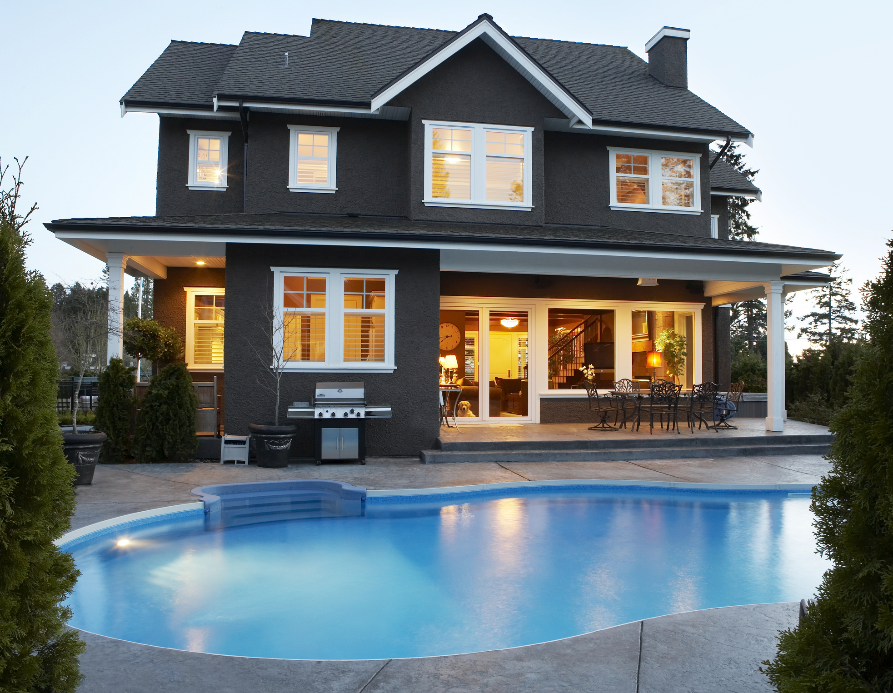

Jared Daniels
Mathematician, computer nerd, and aspiring Data Scientist.

About Me
From a young age, most of the things I learned in life and school seemed to be arbitrary, subjective, and uncertain. Math, on the other hand, was logical, objective, and absolute. It made more sense to me than anything, and I fell in love with it. I wanted to learn all about it and use it to make sense of the world.
I was also born with a keyboard in my lap, and have always been enthralled by what computers can do. I've been building PCs since I was 12 for myself, friends, and family. Computer games also motivated me to learn many aspects of computers. Optimizing hardware and software, building networks, using linux to sniff network packets, creating websites, programming, editing game files and active memory, and much more.
Learning new ideas and solving problems is a driving force in my life. If I ever encounter something I don't understand, or want to understand better I will spend as long as it takes researching that topic until I think I truly understand it.
More recently I discovered Data Science and Machine Learning, which combines my love of math, computers, and my desire to understand and solve problems. My goal is first to advance in a career in Data Science, and ultimately use my skillset to innovate in the field.
My Skills
Mathematics
Problem Solving
Programming
My Projects

House Price ModelModel of housing dataset of Ames, Iowa with 79 features using gradient boosted decision tree XGBoost.
Classifying Handwritten Digits using TensorflowUses image data from the DMNIST database.
Math Garden Webpage: Simple math game made out of tensorflow model.
WARNING: Doesn't work very well on smartphones, may need to use a computer.